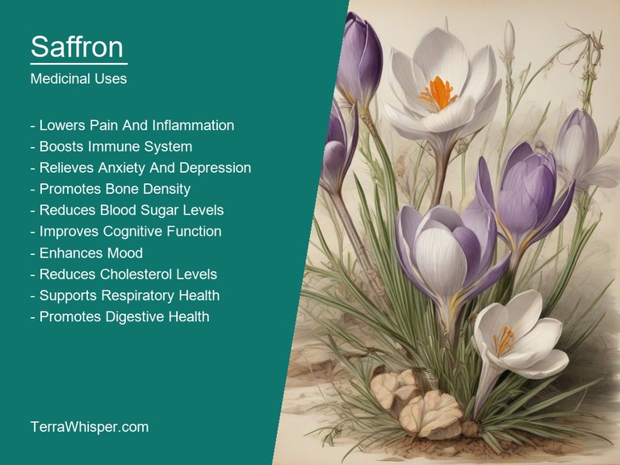
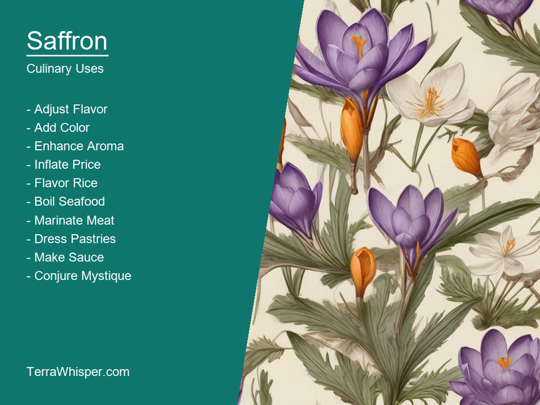
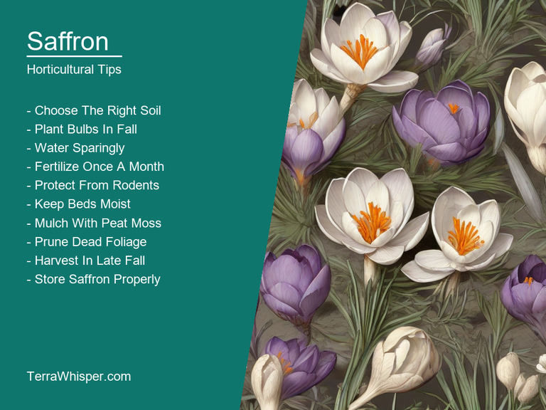
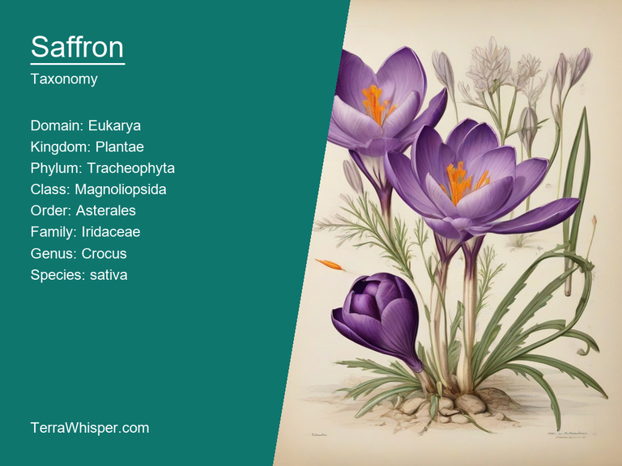
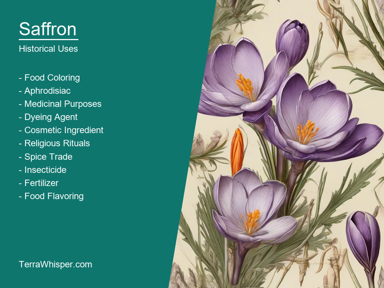

What To Know Before Using Saffron (Crocus Sativa)

Saffron, scientifically know as Crocus sativa, is a well-known and widely used spice in culinary and medicinal practices around the world. It has been utilized for centuries due to its distinct flavor profile and numerous health benefits, with cultivation dating back to ancient civilizations such as the Greeks, Romans, and Egyptians.
Saffron is harvested from the flower of the Crocus sativa plant, which grows primarily in the Mediterranean region. Its unique flavor comes from a combination of essential oils and aromatic compounds, including picrocrocin and crocins. When used as a spice, saffron can be found in dishes like paella, risotto, and bouillabaisse, providing an earthy, slightly sweet taste with an intensely aromatic profile.
In addition to its culinary applications, saffron has been valued for centuries in the field of medicine as well. Traditional and folk healers have used it to treat a variety of conditions, including anxiety, depression, insomnia, and digestive issues. Modern research has also shown saffron extract's potential as an antioxidant, anti-inflammatory agent, and even in the management of Parkinson's disease and Alzheimer's symptoms.
Apart from its culinary and medicinal value, Crocus sativa is appreciated for its horticultural and ornamental qualities as well. Its bright yellow or white blooms with long, slender petals and stigmas have been prized in gardens for their beauty and elegance. They provide a stunning visual display during the fall season when many other flowers have already faded away.
The botanical and historical aspects of Crocus sativa are equally fascinating. It is believed to have evolved from several ancestors that once roamed Asia Minor, Europe, and North Africa, gradually evolving into the distinct species we know today. As saffron has gained popularity throughout history, it has had to overcome challenges such as climate change, competition from synthetic substitutes, and the need for sustainable cultivation practices. This intriguing plant continues to be valued worldwide for its unique flavors and health benefits, making it an important part of both culinary and medicinal traditions across various cultures.
In this article, you will discover what are the medicinal and culinary uses of saffron. Then, you'll learn how to cultivate it, what is its botanical profile, and how it was used historically.
What Are The Medicinal Uses Of Saffron?
Saffron (Crocus sativa) has many health benefits, such as alleviating pain during labor, enhancing memory, reducing premenstrual syndrome symptoms, and treating certain kinds of depression. This plant is also known to be beneficial for treating anxiety disorders like stress-related issues and sleep disturbances. In addition, saffron aids in improving vision by preventing age-related macular degeneration (ARMD). Research studies show it's potential in combating cancerous cells while providing a sense of calmness.
The following illustration lists the most important uses of saffron in medicine.

The medicinal constituents responsible for the vast benefits of Saffron are primarily crocins, which are water-soluble carotenoids responsible for the orange-yellow color. They possess antioxidant properties and contribute to its therapeutic effects. Safranal is another essential component that gives saffron its strong odor and flavor. The bioactive compounds in Saffron have been studied extensively, revealing their potential as a natural remedy for various health conditions.
The most used parts of the Crocus sativa plant are its stigma or "saffron threads," which are obtained from the flower's three female reproductive organs (stigmas). These delicate threads are carefully handpicked and dried to preserve their medicinal properties. Medicinal preparations come in various forms, such as infusions made by steeping saffron threads in hot water or tinctures prepared using alcohol as a solvent.
While Saffron offers numerous health benefits, it's essential to be aware of its potential side effects. Some individuals may experience headaches, nausea, vomiting, dry mouth, and drowsiness upon consuming saffron. Additionally, people allergic to plants in the Iridaceae family (which includes saffron) or any known allergy should avoid using it as it might cause an allergic reaction. As a safety measure, pregnant women should consult their health professionals before adding Saffron to their diet due to its potential effect on the fetus.
What Are The Culinary Uses Of Saffron?
The uses of Saffron (Crocus sativa) in culinary are diverse, extending beyond just its role as a spice. It is used to flavor various dishes like rice, paella, risotto, and desserts such as French pastries, Indian sweets, and Middle Eastern ice creams. It also finds use in savory foods, adding a distinct aroma and hue to dishes like Moroccan tagines, Persian stews, and Spanish soups.
The following illustration lists the most common uses of saffron for culinary purposes.

Saffron's flavor profile is unique, with a combination of bitterness, sweetness, and earthiness. These contrasting qualities can elevate the complexity and balance of a dish, making it an essential ingredient in many recipes for flavor depth and depth of color.
The edible parts of Saffron come from its delicate, vividly orange stigmas that grow atop its small, fragile, purple flowers. These stigmas are carefully hand-harvested and dried to be used as a spice. Despite being small, Saffron is highly valued for its rich flavor and vibrant color it can give to food. It holds importance in various cultures for not only culinary purposes but also religious ones, such as during the celebration of Noruz or Iranian New Year.
In terms of culinary tips, it's crucial to use Saffron correctly. Due to its high price and delicate nature, it is recommended to use just a small amount in recipes. One popular tip is to steep the stigmas in hot liquid for 10-15 minutes before adding them to the dish. This helps in enhancing their flavor and aroma and preventing clumping. Additionally, when using Saffron as a garnish, it's better to add it at the end of cooking so that it doesn't lose its vibrant color or delicate flavor.
While Saffron is generally safe for consumption, it may have some side effects in certain individuals due to its bitter, peppery taste and potential allergies. Overconsumption or long-term use may result in adverse effects like dizziness, nausea, digestive problems, and even hallucinations, depending on the person's sensitivity. It is always advisable to consume Saffron in recommended quantities, as per one's tolerance level.
How To Cultivate Saffron In Your Garden?
To obtain premium-quality Saffron, Crocus sativa requires particular climate conditions and soil properties. It thrives in a temperate climate with well-distributed rainfall of around 500 millimeters (mm) per year. The soil must be rich in organic matter, have good drainage, and maintain a pH level between 6 and 7.5.
The following illustration lists the most important tips to cutlitvate saffron.

For successful plantation, bulbs should be planted in late summer or early autumn when temperatures begin to decrease but before the first frost. Dig trenches about 10 centimeters (cm) deep, spacing the bulbs at least 15 cm apart within the rows and 20-25 cm between each row. Cover them with soil and water well to settle in and facilitate root growth.
After planting, maintain proper irrigation by providing sufficient moisture throughout the growing season. Water the plants regularly but avoid overwatering or saturating the soil as this may cause rot. Fertilize annually using a balanced fertilizer during early spring before new growth appears to support flower production and enhance bulb size.
Saffron blooms in late September to mid-October when flowers reach their peak. To harvest, carefully pick the flowers just after dawn while they are still closed. Once open, the flowers lose their aroma. Hold each flower with a pair of tweezers or gentle hands and gently remove the three stigmas (threads) found in the center of the bloom. Dry these threads in a cool, dark place for around 7-14 days.
Though resilient to many pests and diseases, saffron plants may still face issues such as fungal infection caused by Botrytis cinerea. Keeping the flowers clean during blooming and maintaining proper air circulation can help prevent this fungal development. Additionally, monitor for unwelcome invaders like slugs and snails, which may cause damage to the plant's tender green leaves.
What Is The Botanical Profile Of Saffron?
Saffron, with botanical name Crocus sativa, belongs to the domain Eukarya, kingdom Plantae, phylum Magnoliophyta (angiosperms), class Liliopsida (monocots), order Iridales, family Iridaceae, genus Crocus, and species sativa. Common names for Saffron include Kesar (Indian), Zafran (Spanish), Keshar (Nepali), and Zafferano (Italian).
The following illustration display the botanical profile of saffron.

Varieties like Spanish, Greek, Italian, or Kashmiri differ in terms of their geographic origins. While Spanish Safron is grown in Spain, Greece boasts a Greek Saffron which also thrives in the country's volcanic soil. Italy has its own Saffron cultivated in specific areas around the country. Lastly, Kashmiri Saffron originates from the Indian state of Jammu and Kashmir.
Morphologically, Crocus sativa is a small perennial herb with bulbs that produce long, slender leaves and bloom colorful purple or orange flowers. The plant's corm, or underground stem, stores nutrients for the following year.
Saffron is primarily grown in Spain, Greece, Iran, and Afghanistan as well as in Kashmir, India, and Italy. Its natural habitats can range from rocky mountainsides to meadows and grasslands. In certain regions, it has adapted to specific soil types. Some Crocus sativa varieties require well-drained soils, while others thrive in clay or loam.
Saffron undergoes a complex life cycle that begins with pollination. The plant relies on wind or insects like bees to carry pollen from one flower to another within its cultivated fields. Once fertilized, the stigmas develop into long red-tipped spikes which are later harvested for their vivid threads known as saffron. This highly coveted spice is then used globally for various purposes like culinary arts, cosmetics, and traditional medicine.
What Are The Historical Uses Of Saffron?
The etymology of "Saffron" originates from Latin term 'safranum', which came directly from Ancient Greek word ‘sakhylon'. It is not known with exact accuracy how it got its name, but one possible theory suggests the namesakes might have been due to their resemblance in appearance between certain plant leaves and saffron flowers. The roots for these terms lie deep within ancient history; however, Saffron itself has an even longer past associated from prehistoric times till nowadays where it is still being used across different cultures with multiple functions including culinary practices as well its numerous medicinal benefits making the golden colored spice one of those prized herbs that were once reserved for royalty.
The following illustration lists the most well known historical uses of saffron.

ranging from a symbolic representation related to enlightenment or knowledge associated with academic institutions such as Oxford University; an emblem of wealth due its pricey nature often making even expensive purchases look affordable compared against purchasing the precious spice.
Saffron has been woven into various myths and legends throughout history from Ancient Rome to today's Iranian tales, where it is considered sacred owing greatly not only for both health benefits but also symbolism - serving as a representation of passion (association with Zeus & Aphrodite), purity in Hindu tradition during weddings or even used among women in ancient Greece who wanted fertility goddesses to bless them.
The cultural significance and mythical associations aside, Saffron has played quite the starring role as reference in literature from works of Shakespeare's 'The Taming Of Shrew', where a love potion is made using it; Greek tragedies like Euripides' play Medea or Homeric epics Odyssey and Iliad - both referencing its use by healers.
Saffron has been used through countless different medicinal approaches, with people having tried to find a way for making medicine more digestible that even gave rise into an alchemic technique known as Spagyrics which aimed at extracting therapeutic properties from herbs including saffrons roots or flower heads by distilling them over heat while retaining their essence. It's believed the use of this ancient art could potentially have been used to treat ailments such like depression, epilepsy and liver maladies just among others listed in various folklore traditions across different cultures around world - all adding up making it truly more than simple culinary ingredient but rather having significance on every aspect which contributed for shaping our history.